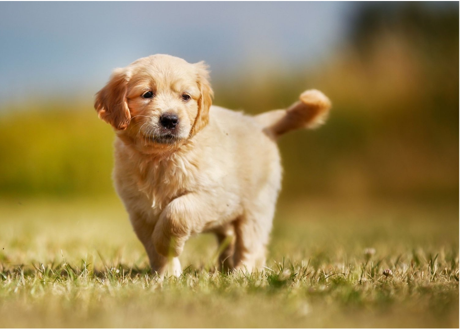

Bacon Q Dog

Bacon Q. Dog is a 9yr old labradoodle. He prefers to spend his days lounging among the three different beds/couches that his family has gifted him. He enjoys a walk or two around the neighborhood, as long as he can pretend that he doesn't see any of the other animals to avoid the embarrassment of not wanting to admit he has no wolf-like skills in chasing them.
At night just as the rest of the family is ready to relax, Bacon suddenly wants to release all of his energy. He will place his toys on a mini couch and frantically drag the couch around, giving his toys "a ride." There is also a lot of rolling. Lots and lots of rolling.
Photo Gallery


Likes
- Belly rubs
- Playing tug-of-war
- Sneaking onto the couch
Max Dog
Max the Golden Retriever is a 5-year-old bundle of sunshine with a heart as golden as his coat. His fur glistens like freshly polished brass under the warm sunlight, and it's as soft as a cloud to the touch. His expressive, almond-shaped eyes are the color of rich, melted caramel, always sparkling with a playful curiosity that's impossible to resist.
Standing at an impressive 24 inches tall at the shoulder, Max carries himself with an air of gentle dignity that belies his goofy and lovable nature. His well-muscled body is the embodiment of strength and agility, yet his graceful movements make him seem almost weightless as he bounds through life with unbridled enthusiasm.
Juno Dog

No one knows exactly what breed Juno is, but that makes him all the more special. He was adopted before he was one year old; despite this and his German shepherd-esque looks, he stayed close to the same size, hovering around 50 lbs into adulthood. At the weathered age of ten years old, Juno is dealing with hip problems, but manages to stay in good spirits.
One of Juno’s favorite pastimes is finding the dirtiest puddle within a one-mile radius and making sure every inch of him makes contact with said puddle. If rolling around in dirt was an Olympic sport, Juno would have been the one that facilitated its inclusion into the Olympics.
Photo Gallery


Smoothie Cat

Smoothie has been dubbed the "world's most photogenic cat", and her emerald eyes and golden fur have even inspired a mural in New Zealand. Smoothie also has an aptly-named brother named Milkshake, and the two are often featured together across social media platforms.
She became an internet sensation with 2.3 million followers on her smoothiethecat Instagram account.
Photo Gallery


Brul Cat

Brul is a 2yr old Maine coon cat. She prefers to spend his days lying in the bed. She enjoys watching outside from the window as long as there are no loud noises and bugs outside.
Brul loves walks on the beach and taking sun naps on a warm summer day. Brul is a playful cat but enjoys having slow, relaxed days at the same time. She hates grooming and bathing.
Photo Gallery


Cody Dog

Cody is a 7yr old Pembroke Corgi. He was born in Cavalier Farms, Seattle. He prefers to spend his days lounging on the bean bag. Every day, he enjoys two walks around the neighborhood and likes to make friends with other doggie friends. If lucky enough, he might see the cyclist, but he is not allowed to give chase.
Cody loves traveling. He enjoys walking on the beach and taking sun naps. But he hates cold weather. He would like to stay at home lounging by the fireplace in winter.
Photo Gallery


Lulu

Lulu is a lively guinea pig who enjoys eating carrots and peppers. When not given any carrots or peppers she will squeak.
Lulu is very adventurous, she will explore her surroundings looking for food and is not afraid.
Photo Gallery